Unit 2 · Persepolis · Lesson 7
Throne Hall, wall reliefs and glazed brick: what survives?
The stone has lasted 2,500 years. What has gone, and how much can the ruins still tell us about how Persepolis looked?
Year 11 Ancient History · Present with → or space · Read on a phone with R
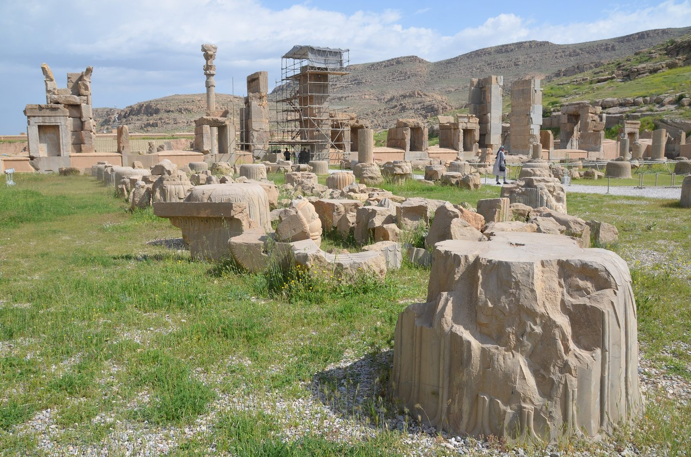
Review · books closed · 6 minutes · press K for the timer
Six questions from Unit 1 and Lessons 1–6
- Name one scientific dating method and one limit of it. Radiocarbon dating: it dates only once-living (organic) material such as wood, charcoal or bone, back to about 50,000 years, and gives a range that must be calibrated.
- Who was Gaumata, according to Darius, and why do some historians doubt the story? A Magian who, Darius says, posed as Cyrus’s son Bardiya. Our main account is Darius’s own Behistun inscription, carved for the man who gained most from the story, and some historians think Darius overthrew the real Bardiya.
- What does Darius claim in his terrace inscription DPf, and what is it reliable for? That he built a palace on this terrace, “on a place where no palace had been built before”, by the grace of Ahuramazda. Strong evidence of how Darius wanted the terrace to be seen; weak evidence of why he chose the site.
- What did Herzfeld’s expedition find in 1933? The gold and silver foundation tablets of the Apadana (found by his architect Krefter), and the Fortification Tablets: tens of thousands of clay tablets and fragments in the fortification wall.
- Writing · fix this opening sentence for the question “How did the Apadana stairway reliefs present the empire?” — “The Apadana stairway shows twenty-three delegations climbing the stairs.” For example: “The Apadana stairway reliefs present the empire as orderly and willingly obedient: twenty-three delegations, each led in by an usher, bring gifts to the king.” It answers the question first, and turns shows into presents … as (This Does That).
- What does DPh list, and who was it written for? The extent of Darius’s kingdom, “from the Sacae who are beyond Sogdia to Kush, and from Sind to Lydia”. Buried in the Apadana’s foundations, it was addressed to the gods and to future kings, not to visitors.
Mark your own answers in a different colour. Which question did you find hardest?
Learning intentions and success criteria · 2 minutes
Today’s goals
- analyse the Throne Hall reliefs and glazed brick as sources
- explain how gaps in the evidence limit what we know about Persepolis
- describe the Throne Hall reliefs and what they show about kingship
- explain why so little glazed brick and paint survives, and what that means
- write a value-and-limitations paragraph about surviving evidence
Syllabus outcomes: AH-11-05 analyses different types of sources for evidence to support a historical account or argument · AH-11-06 explains differing interpretations and representations of the past · AH-11-07 communicates historical understanding, applying historical knowledge, terms and concepts. Life Skills: AH-LS-08 uses sources to form conclusions about the past · AH-LS-10 compares representations of the past.
Note-making · the routine for the whole course
How to structure your notes
questions and key terms, written after
short phrases, arrows (→ leads to), abbreviations (c. = about; km = kilometres)
- 1Rule up the page firstA cue column about a quarter of the page wide; title and date at the top; room for a summary at the bottom.
- 2Listen and look, then writeDon’t copy while a slide is being explained. Phrases, not sentences.
- 3Write your own notes at each ✎ checkpointThen compare with the model notes, one row at a time. Add what you missed in a second colour.
- 4Write the cue questions afterwardsUse exam verbs: explain, analyse, assess. To revise, cover your notes and answer the cues.
- 5Finish with a three-sentence summaryTwo checkpoints today: the Throne Hall reliefs · the glazed-brick puzzle.
Key vocabulary · add to the unit word wall
Words for reliefs, bricks and what survives
| From the unit list | Meaning |
|---|---|
| relief | A carving that stands out from a flat stone background. |
| polychromy | The use of many colours, as on the originally painted reliefs. |
| glazed brick | Brick coated with a coloured, glass-like finish; panels of it formed pictures on walls. |
| hypostyle hall | A hall whose roof is held up by many columns. |
| reconstruction | A modern rebuilding or picture of how something looked — evidence of what its maker imagined, not direct evidence of the past. |
| Added for this lesson | Meaning |
|---|---|
| Hall of a Hundred Columns | Also called the Throne Hall: the second-largest hall on the terrace, its roof held up by ten rows of ten columns. |
| throne-bearers | Small carved figures, in the dress of the empire’s different peoples, shown holding up the king’s throne. |
| royal hero | A relief figure of the king, or a Persian hero, killing a lion, a bull or a monster. |
| frieze | A long band of decoration along a wall. |
| cloisonné | A pattern made of small areas of coloured glaze, kept apart by thin lines of thick glaze. |
| mudbrick | Brick made of clay and dried in the sun, not fired in a kiln. |
1 · The Throne Hall · I do
The Hall of a Hundred Columns: a forest of columns, eight carved doorways
10 rows × 10
N ↑ · plan not to scale
- 1Begun by Xerxes, finished by his sonAn inscription of Artaxerxes I found in the hall says his father Xerxes laid the foundations and he completed it: the 5th century BCE.
- 2Huge, and full of columnsAbout 68.5 m square; ten rows of ten stone columns, each nearly 14 m high, under a roof of cedar beams.
- 3Eight stone doorways, all carvedThe main entrance was on the north, through a portico; every doorway had carved reliefs: the plan shows what each pair shows.
- 4What is leftThe stone: column bases, door and window frames, the reliefs. Charred cedar beams show that the hall burned.
1 · The Throne Hall · I do — think aloud · a southern doorway relief
The king carried by his peoples: what does it show, why, and what can it not tell us?
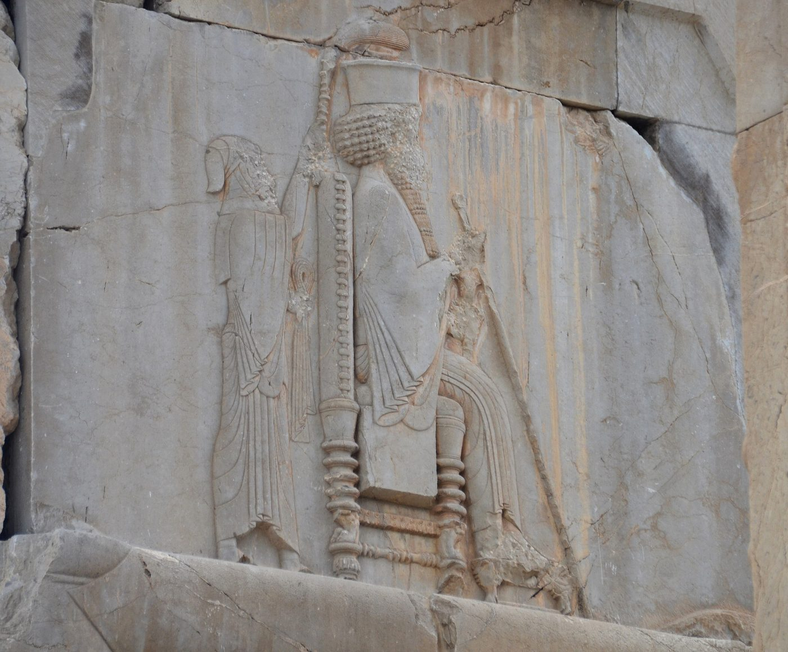
top: the king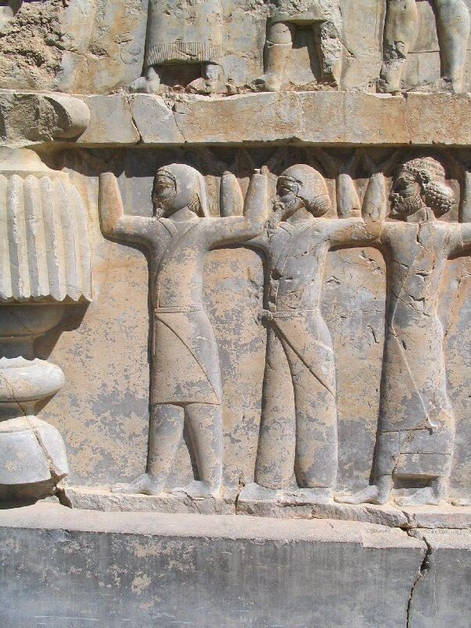
below: the bearers… look at the sculptures [of those] who bear the throne, then shall you know, then shall it become known to you: the spear of a Persian man has gone forth far …
Darius I (king 522–486 BCE), carved on his rock-cut tomb, whose façade also shows throne-bearers · translation as published by Livius.org
What does it show?
The king sits on a throne under a canopy, an attendant behind him. Below, rows of small figures in the dress of different peoples raise their arms and hold up the throne’s platform: the peoples of the empire carry the king.
Who made it, and why?
The king’s sculptors, on the southern doorways of his great hall, which led to narrow rooms behind it (the main entrance was on the north, so we do not know exactly who saw them). It presents his rule as resting on all his subject peoples, orderly and willing. Darius used the same image on his tomb to show how far Persian power reached.
What can it not tell us?
How the subject peoples really felt; any real event or ceremony; for certain which king it is (probably Artaxerxes I, who finished the hall); its original colours and metal fittings, which are gone.
Strong evidence of how the king wanted his rule to be seen. Weak evidence of how his subjects saw it.
Images: Carole Raddato (CC BY-SA 2.0) · Jona Lendering (CC0 1.0). Full details on the last slide.
1 · The Throne Hall · I do → cold call
Heroes, servants and guards, and the paint that has almost gone
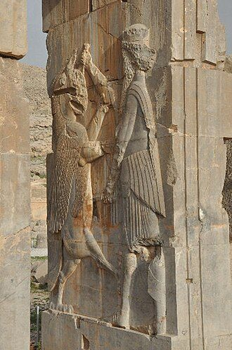
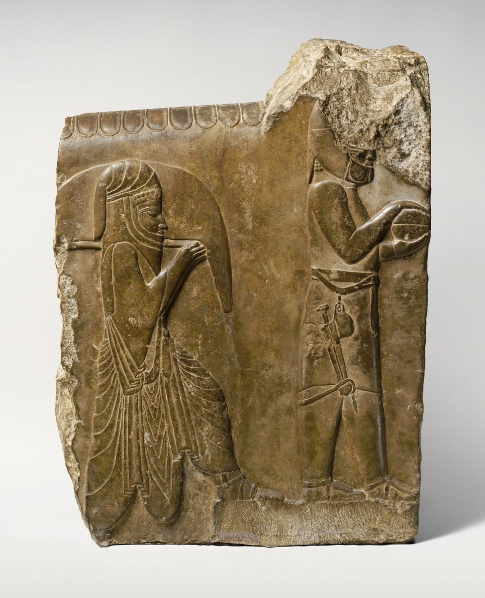
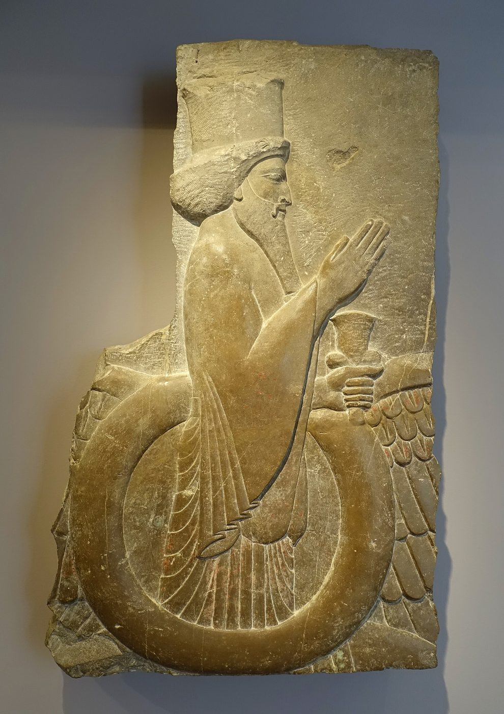
1932, uncovering the Apadana’s eastern stairway, he found traces of pigment:
… everywhere at the sculptures which had been buried under the soil.
1941, on the sculptures of Persepolis:
… were conceived in colour and intended to be painted.
As quoted by A. Shapur Shahbazi, ‘Persepolis’, Encyclopaedia Iranica (2009), who adds that the paint Herzfeld saw in 1932 vanished soon after it was dug up
The reliefs were painted. What does the grey stone hide from us today?
The colours, and the fittings of precious metal and stone once fixed to some figures (on one relief, the king’s crown, beard and arms), which were looted. We see the carving, not the finished picture an ancient visitor saw.
Images: Jona Lendering (CC0 1.0) · The Met (CC0 1.0) · Daderot (CC0 1.0). Full details on the last slide.
Notes checkpoint 1 of 2
The Throne Hall reliefs
2 · The glazed-brick puzzle · We do — piece 1 of 3
Piece 1: brilliant glazed-brick panels, but from Susa
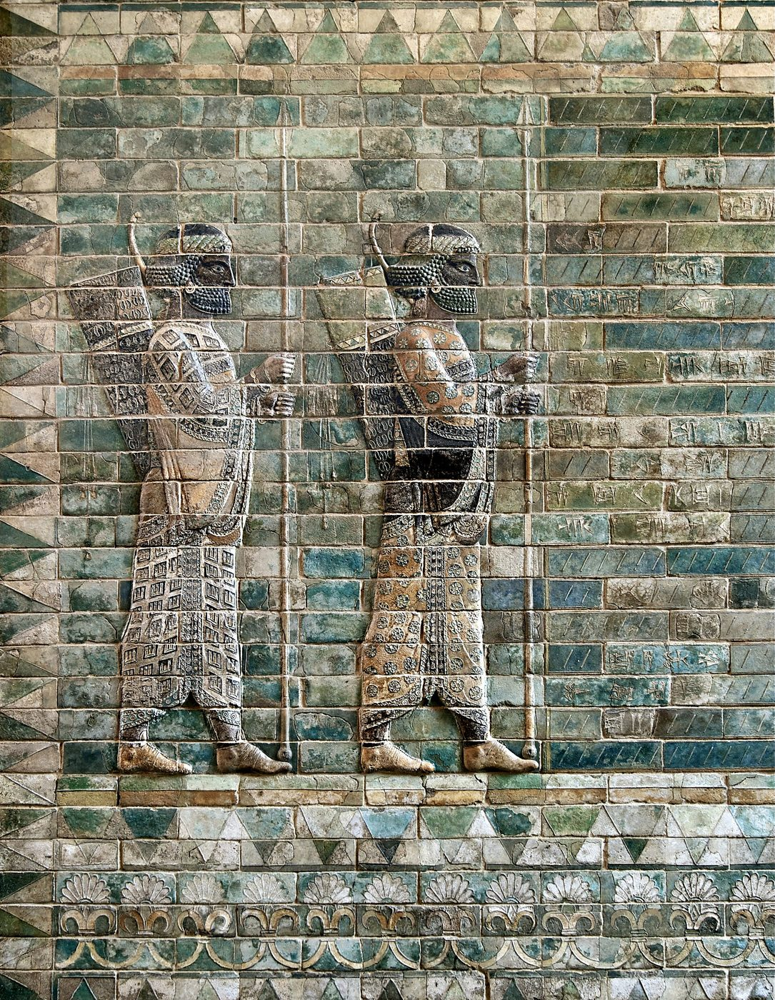
guards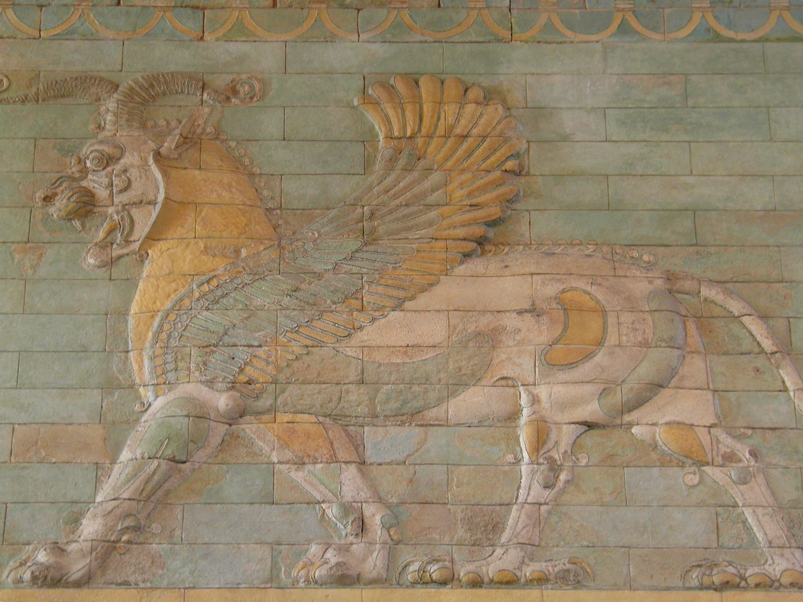
griffin- 1Where and whenThe palace of Darius I at Susa, built about 510 BCE: about 500 km west-north-west of Persepolis.
- 2WhatMoulded, coloured, glazed bricks set together to make pictures: guards, lions, winged bulls and griffins. Now in the Louvre, Paris, and in Iran.
… many were recovered outside the palaces, and even in post Achaemenid levels, all reused. Hence it is not possible to reconstruct their original positions, contexts and juxtapositions.
‘Achaemenid glazed brick decoration’, Encyclopaedia Iranica (2017)
Darius’s builders could make, and chose to use, colourful glazed-brick friezes of guards and beasts.
That Persepolis had the same: Susa is another city, and even there most panels’ original places are unknown.
Images: Jebulon (Public domain) · Carole Raddato (CC BY-SA 2.0). Full details on the last slide.
2 · The glazed-brick puzzle · We do — piece 2 of 3
Piece 2: what glazed brick has been found at Persepolis itself?
The only examples of glazed bricks from Persepolis consisted of a frieze of cloisonné palmettes, and two bricks with circular bands.
‘Achaemenid glazed brick decoration’, Encyclopaedia Iranica (2017)
- +And their find-spots?Six glazed-brick fragments from Herzfeld’s digs at Persepolis are in a museum in Washington, DC. Exactly where on the site they were found can no longer be worked out.
Glazed brick was used at Persepolis: fragments of a palmette frieze and a few banded bricks survive.
Whether glazed-brick pictures of guards or beasts ever lined its walls, or where the frieze was: too little survives.
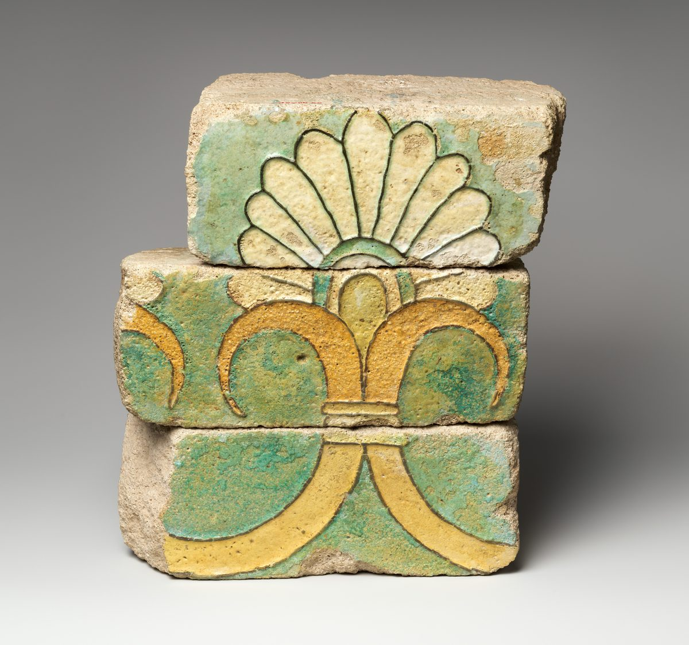
a palmette pattern2 · The glazed-brick puzzle · We do — piece 3 of 3
Piece 3: a glazed-brick gate just outside Persepolis
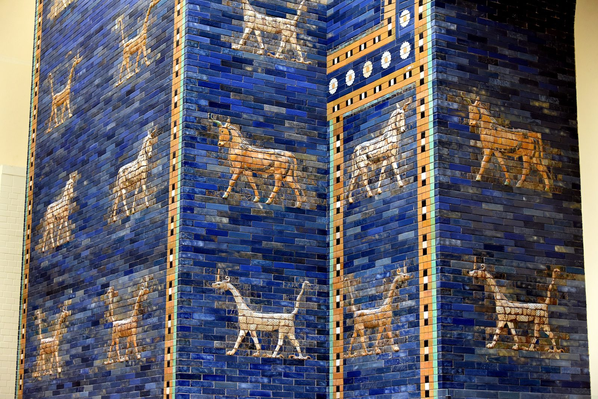
for comparison: Babylon- 1Tol-e AjoriAbout 3.5 km west of the terrace; dug from 2011 to 2023 by an Iranian–Italian team (Alireza Askari Chaverdi and Pierfrancesco Callieri).
- 2A gate, probably older than the terraceA huge gate of mudbrick and brick. Its excavators date it before the terrace, to Cyrus or Cambyses.
Numerous glazed bricks recovered from the debris of the building indicate that the wall surfaces were entirely adorned with depictions of mythological animals such as the bull and the composite Mušḫuššu creature.
A. Askari Chaverdi and P. Callieri, Journal of Archaeological Studies (University of Tehran, 2025) · the mušḫuššu is a dragon, the emblem of the Babylonian god Marduk · photos: UCLA Iran Gazetteer
Glazed-brick bulls and dragons, like Babylon’s, decorated a gate just outside Persepolis, probably before the terrace.
That the terrace’s own buildings looked like this: it is a separate, probably earlier, building.
2 · The glazed-brick puzzle · We do — build the T-chart · cold call before each row
How did Persepolis look? What we can say, and what we cannot
| What we can say | What we cannot say |
|---|---|
| The stone survives: column bases, doorways, stairways, reliefs. They show the plan and the carved images. | How the roofs, upper walls and rooms looked: the cedar beams burned and the mudbrick walls are mostly gone. |
| The reliefs were painted: traces of blue, green and red survive. | The full colour scheme of any one relief: most paint is lost, some soon after it was dug up. |
| Glazed brick was used at Persepolis: fragments of a palmette frieze and a few banded bricks. | Whether glazed-brick pictures lined its walls, or where: too little survives. |
| Darius’s builders made brilliant glazed-brick friezes at Susa. | That Persepolis had the same: Susa is about 500 km away, and most of its panels’ places are unknown. |
| A glazed-brick gate with bulls and dragons stood about 3.5 km away. | That the terrace looked like it: it is a separate, probably earlier, building. |
So: what survives is the stone skeleton of Persepolis, so the grey ruin is a misleading picture of it. Any picture of the city in colour has to fill large gaps, often with evidence from other sites.
Notes checkpoint 2 of 2
The glazed-brick puzzle
3 · What survives? · You do — sort in pairs · 4 minutes · press K for the timer
Sort the eight cards: what is left of Persepolis, and why?
1Survives well2Survives only in fragments or traces3Almost all gone?For each: why? What destroyed it, or what saved it?
Sort all eight into the three piles, and write one reason for each pile.
Start with: Was it ever alive (wood, cloth)? Was it burned, looted, or left out in the weather?
Which pile would an ancient visitor have noticed most? What does that tell you about the ruins we see?
3 · What survives? · check your sort · cold call a pair before each row
What survives at Persepolis, what is lost, and why
| Cards | Pile | Why |
|---|---|---|
| A · stone columns and doorways B · carved reliefs | survive well | stone does not burn or rot (though the fire discoloured some); but the reliefs are broken, weathered or damaged, and some pieces were taken away to museums (Harvard, the Met) |
| D · cedar roof beams F · paint G · glazed bricks | fragments or traces | the roofs burned (charred beams were found); paint survives only in traces, and some vanished soon after digging; glazed brick only as fragments, some with their find-spots lost |
| E · cloth H · precious-metal fittings | almost all gone | cloth burns and rots; the precious-metal fittings were stripped off when the city was looted |
| C · mudbrick walls | tricky: fragments, or almost all gone | it depends on your reason: the upper walls are gone, but low walls survive in places (at the Treasury the excavators even cut them down to “a standard low level”) |
So: fire, looting, weather and even excavators decided what survives. We see the hardest materials, not the whole building. A gap in the evidence is not proof that something never existed.
3 · What survives? · Writing focus · 6 minutes · I do → We do → apply
Writing focus: linking sentences with this + a summary noun
Turn what the last sentence described into a noun (is Darius’s own inscription → reliance), then point back to it with this: this + summary noun links the new sentence to the last one. The new idea at the end of one sentence starts the next.
Our main account of Gaumata is Darius’s own Behistun inscription, carved for the man who gained most from the story. This reliance on the winner’s version means that historians cannot be sure who Darius really overthrew in 522 BCE.
A worked example, written for this lesson, from today’s Review (Gaumata). Summary nouns: this reliance · this claim · this limitation · this loss · this gap.
First sentence (from today’s Review): “Radiocarbon dating works only on once-living material such as wood, charcoal or bone.” Which second sentence links back to it best?
- AThis shows that it cannot date a carved stone relief directly for us.
- BHowever, it cannot directly date a carved stone relief for archaeologists.
- CThis limitation means that it cannot date a carved stone relief directly.
- DAlthough it works on wood, but it cannot date a carved stone relief directly.
This limitation names exactly what the last sentence described. A’s bare this points at nothing in particular. B’s however signals a contrast that isn’t there. D uses although and but together.
Write your opening judgement, then your first limitation of the reliefs or the glazed brick, and link the next sentence to it with this + a summary noun of your own.
3 · What survives? · You do · 12 minutes · press K for the timer
Paragraph: how useful are the reliefs and glazed brick?
Verb how useful: value for a stated purpose · Topic the surviving reliefs and glazed brick · Limits how Persepolis looked (Achaemenid) · Do judgement → value → limitations → useful for … not for ….
‘How useful are the surviving reliefs and glazed brick for understanding how Persepolis looked in the Achaemenid period?’
- value: what the reliefs and bricks can show, with evidence
- limitations: what is lost, and why
- end with a judgement: useful for what, and not for what?
Use your T-chart and the starters: “The reliefs are useful because …” · “However, they are limited because …” · “Overall, they are most useful for …”
Can evidence from Susa or Tol-e Ajori fairly fill the gaps at Persepolis? What are the risks of using one site to reconstruct another?
The surviving reliefs and glazed brick are useful but limited evidence for how Persepolis looked in the Achaemenid period. Carved in stone, the reliefs survive in large numbers: on the southern doorways of the Hall of a Hundred Columns, for example, the king sits enthroned above rows of throne-bearers in the dress of the empire’s peoples. Their value, however, is limited by the loss of the painted surfaces. Traces of blue, green and red paint on a fragment from the same hall, and the pigment Herzfeld saw on the Apadana’s sculptures in 1932, show that the reliefs were once coloured, but most of the paint has gone, so the grey stone we see is not what an ancient visitor saw. Surviving only as fragments, the glazed brick from Persepolis is even less useful: Muscarella records only “a frieze of cloisonné palmettes, and two bricks with circular bands”, so we cannot tell whether glazed pictures lined its walls. The friezes from Susa and the gate at Tol-e Ajori suggest what Achaemenid builders could make, but they belong to other buildings, and the destruction of the cedar roofs leaves the setting of the reliefs uncertain. On balance, the surviving evidence is most useful for the carved stone decoration and much less useful for the colour and overall appearance of the buildings, which any reconstruction must partly imagine.
Check for understanding · gesture vote · thumbs on “3, 2, 1, show”
“The colour reconstruction shows what Persepolis really looked like.”
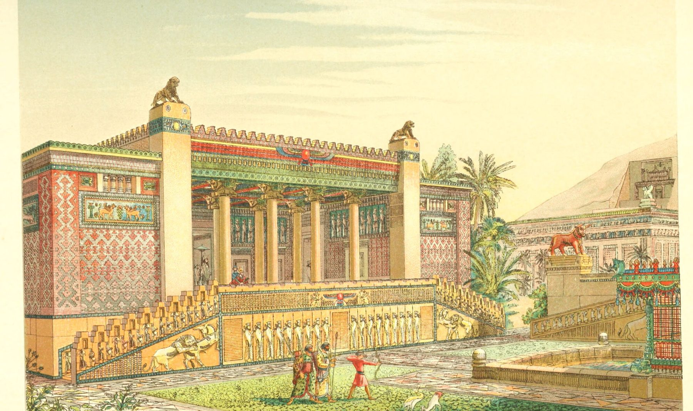
a colour reconstruction, 1890- 👍Agree: it shows how the palace really looked
- ✋Partly: some of it rests on real evidence
- 👎Disagree: most of it rests on guesswork
Charles Chipiez drew from the ruins (the stone doorways, column bases and stair reliefs are real), but much of the rest was borrowed or imagined: the patterned brick walls, the lions on top and the frieze of archers in the porch, which the authors say was “copied on those found at Susa in the same situation”. Yet they claimed their restoration of the front “offers, so to speak, no doubtful elements”. So a reconstruction is evidence of what its maker imagined, not direct evidence of the past (Unit 1, Lesson 7). Even the Getty’s 2022 digital model, which it calls “the most accurate recreation of Persepolis to date”, must choose colours that mostly no longer survive.
Images: Carole Raddato (CC BY-SA 2.0) · Chipiez 1890 (Public domain). Full details on the last slide.
Finish your notes If time · or at home
Summary: three sentences
- What do the Throne Hall reliefs show about kingship?
- Why does so little glazed brick and paint survive, and what does that mean?
- How far can a colour reconstruction be trusted?
The reliefs on the southern doorways of the Hall of a Hundred Columns show the king enthroned and carried by throne-bearers from his subject peoples, presenting his rule as upheld by the whole empire: strong evidence of how the king wanted to be seen, but not of how his subjects felt. Fire, looting and the weather left mainly the stone, so paint survives only in traces and glazed brick only as fragments, which means the grey ruin we see is not what an ancient visitor saw. A colour reconstruction must fill these gaps with evidence from other sites and with guesswork, so it is an interpretation of Persepolis, not a picture of it.
Exit ticket · 5 minutes · before you leave
One gap, and what it means
“One gap in the evidence about Persepolis is … This means that …”
A precise gap (the lost paint; glazed brick surviving only as fragments; the burned cedar roofs; the lost mudbrick walls; the looted precious-metal fittings) and a precise consequence for what we can know: for example, that we cannot see the original colours, so any colour reconstruction is partly imagined.
Then check yourself against today’s three “I can” statements. Next lesson: writing an OVPRL paragraph on a relief from Persepolis.
Practice and review · 1 of 3 · true, false, justify
True or false? Justify your answer
- 1The Hall of a Hundred Columns was begun and finished by Darius I. False — it was begun by Xerxes and finished under his son Artaxerxes I.
- 2On the southern doorways, the king’s throne is held up by figures in the dress of the empire’s peoples. True — the throne-bearers stand for the subject peoples carrying the king.
- 3The reliefs at Persepolis were always plain grey stone. False — traces of blue, green and red paint survive; the reliefs were painted.
- 4Large glazed-brick panels of archers have been found at Persepolis. False — the archers are from Susa; Persepolis has only fragments (a palmette frieze and two banded bricks).
- 5The gate at Tol-e Ajori proves that the buildings on the terrace were covered with bulls and dragons. False — it is a separate gate, probably older than the terrace; it shows what builders could make, not what the terrace had.
- 6A colour reconstruction is evidence of what its maker imagined, not direct evidence of the past. True — it fills the gaps with guesses and with evidence from other sites.
Practice and review · 2 of 3 · writing
Write it as a historian
Rewrite as one sentence with noun groups: “The paint was lost and the cedar roofs burned, so the ruins look grey.”
The loss of the painted surfaces and the destruction of the cedar roofs leave the ruins grey and bare.
Finish: “The throne-bearer relief is reliable for … but not for … because …”
The throne-bearer relief is reliable for how the king wanted his rule to be seen, as upheld by all the peoples of his empire, but not for how those peoples felt about it, because it was carved by the king’s sculptors for a doorway of his own great hall.
Can evidence from Susa or Tol-e Ajori fairly fill the gaps at Persepolis? What are the risks of using one site to reconstruct another?
Evidence from Susa and Tol-e Ajori can suggest, but not prove, how Persepolis looked. Both show that Achaemenid builders made brilliant moulded and glazed brick: guards, lions and griffins in Darius’s palace at Susa, and bulls and mušḫuššu dragons on the gate at Tol-e Ajori, only about 3.5 km from the terrace. Using them to fill the gaps at Persepolis is risky, however. Susa lies about 500 km away, and even there most of the bricks were found scattered and reused, so their original places are mostly unknown. Tol-e Ajori is a separate gate that its excavators date before the terrace, so it may show an earlier style. At Persepolis itself, Muscarella records only “a frieze of cloisonné palmettes, and two bricks with circular bands”. A reconstruction that borrows Susa’s archers for Persepolis therefore shows what was possible, not what is known, and should say so.
Start the second sentence with this + a summary noun: “In DPf Darius claims that he built his palace where no palace had stood before. It tells us how he wanted the terrace to be seen, not why he chose the site.”
This claim by the builder himself tells us how he wanted the terrace to be seen, but not why he chose the site. (A model, written for this lesson.)
Practice and review · 3 of 3 · cover your notes and answer from memory
Quick checks
- Who began and who finished the Hall of a Hundred Columns? It was begun by Xerxes and finished under his son Artaxerxes I, in the 5th century BCE.
- Describe the relief on the southern doorways. The king sits on a throne under a canopy, an attendant behind him; below, rows of throne-bearers in the dress of the empire’s peoples hold up the platform.
- What does the throne-bearer relief show about kingship, and what is it not reliable for? It presents the king’s rule as upheld by all his peoples; it is reliable for how he wanted to be seen, not for how his subjects felt.
- What evidence shows that the reliefs were painted? Traces of blue, green and red paint, for example on a fragment from the hall now at Harvard; Herzfeld also found pigment on the Apadana sculptures in 1932, but it vanished soon after.
- What glazed brick survives from Persepolis, and where are the best panels from? Only fragments: a frieze of cloisonné palmettes and two bricks with circular bands. The best panels (guards, lions, griffins) are from Susa, now in the Louvre and in Iran.
- Why is a colour reconstruction of Persepolis an interpretation? Paint, glazed brick, roofs and walls are mostly lost, so its maker fills the gaps from other sites and by guesswork: it is evidence of what its maker imagined, not direct evidence of the past.
Sources and credits
Where everything comes from
O. W. Muscarella, ‘Achaemenid glazed brick decoration’, and A. Shapur Shahbazi, ‘Persepolis’ (quoting E. Herzfeld, 1932 and 1941), Encyclopaedia Iranica, quoted briefly with credit. Darius I, DNa: translation as published by Livius.org (the wording of R. G. Kent, Old Persian, 1953); DPf and DPh: translations as published by Livius.org (after P. Lecoq, 1997); quoted briefly; © Livius.org; facts from Livius.org, ‘Persepolis, Hall of 100 Columns’ and ‘Palace of Darius’. A. Askari Chaverdi and P. Callieri, Tol-e Ajori, Journal of Archaeological Studies (2025), and the UCLA Iran Gazetteer. G. Perrot and C. Chipiez, History of Art in Persia (1892), pp. 158–161, 327 and 338–340, archive.org (public domain). Tol-e Ajori’s direction: the excavators’ mission page, ISMEO. J. Paul Getty Museum, Persepolis Reimagined (2022).
Object records: Harvard Art Museums 1943.1062; the Metropolitan Museum of Art 34.158 and 48.98.20a–c; ISAC Museum, Persepolis: Images of an Empire; French Ministry of Culture (Susa archers). Studies (CC BY 4.0): E. Aloiz, J. G. Douglas and A. Nagel, Heritage Science 4 (2016); S. Ebbinghaus and others, Heritage 7 (2023). Teacher resources: Imperial Narratives in Stone; The Treasury and the Hall of a Hundred Columns; Palaces and Private Spheres (class notebook ‘Persepolis’). Syllabus: outcomes and content: NSW Education Standards Authority (NESA), Ancient History 11–12 Syllabus (2024). © NESA.
- Inside the Hall of a Hundred Columns today · Photo: Carole Raddato · CC BY-SA 2.0 · source
- Throne scene, southern doorway, Hall of a Hundred Columns (cropped) · Photo: Carole Raddato · CC BY-SA 2.0 · source
- Throne-bearers, Hall of a Hundred Columns · Photo: Jona Lendering (Livius.org) · CC0 1.0 · source
- The royal hero, Hall of a Hundred Columns · Photo: Jona Lendering (Livius.org) · CC0 1.0 · source
- Relief: two servants bearing food and drink (Met 34.158) · The Metropolitan Museum of Art, Harris Brisbane Dick Fund, 1934 · CC0 1.0 · source
- Relief fragment with a winged figure, Harvard Art Museums 1943.1062 · Photo: Daderot · CC0 1.0 · source
- Glazed-brick frieze of archers from Susa (Louvre AOD 488) · Photo: Jebulon · Public domain · source
- Glazed-brick griffin from Susa (Louvre) · Photo: Carole Raddato · CC BY-SA 2.0 · source
- Glazed bricks with a palmette motif, Susa (Met 48.98.20a–c) · The Metropolitan Museum of Art, Rogers Fund, 1948 · CC0 1.0 · source
- Bulls and dragons on the Ishtar Gate of Babylon (Pergamon Museum) · Photo: Osama Shukir Muhammed Amin · CC BY-SA 4.0 · source
- Charles Chipiez, Persepolis: Palace of Darius, restored (1890), Pl. IX (cropped) · Charles Chipiez, in G. Perrot and C. Chipiez, Histoire de l’art dans l’antiquité, vol. V (1890), Pl. IX · Public domain · source
,_Persepolis,_Iran_(47727265262).jpg){kind=link}
_depicting_an_enthroned_king_and_attendant,_Persepolis,_Iran_(47098456004).jpg){kind=link}


.jpg){kind=link}

All images are public domain or openly licensed, and were resized for the web (the southern-doorway relief, the servants relief, the Susa guards and the 1890 plate were also cropped; the plate was turned upright). Each image is shared under the licence shown.